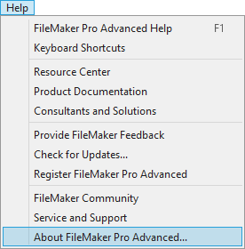
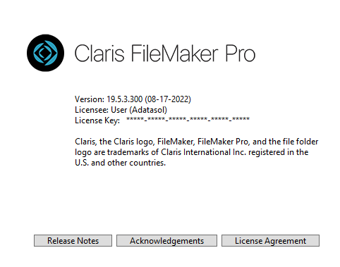

Network Troubleshooting
Step 1 when a Guest device is unable to connect to your FrameReady Host computer.
On the Server Computer
-
Check your version of FileMaker Pro: in the menu bar, click Help and choose About FileMaker Pro Advanced.

-
The About window appears.

-
Click the Info button and write down the version number so you can compare later. Also note if FileMaker is 32 or 64 bit.
-
Next, open FrameReady and login as level4.
-
Click the Setup Data icon and open the Network tab.
-
Verify that the red text reads:
Network sharing is turned on. -
If network sharing is off, then click the Set Files to Multi-User button.
If an alert reads "cannot share files because another user is sharing" then please call the FrameReady Team at 1-888-281-3303.
Tip: Sometimes it is helpful to turn sharing off and then back on again. Click Set Files to Single User. Then go back into the Network tab and click Set Files to Multi User.
-
Click the What's My IP Address button.
Write down the IP address with the dots, e.g. 192.168.1.100. You will need this number later on. -
Next, go to your Guest computer.
Next: Ping Test
© 2023 Adatasol, Inc.